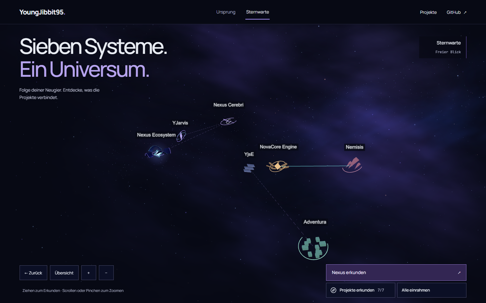
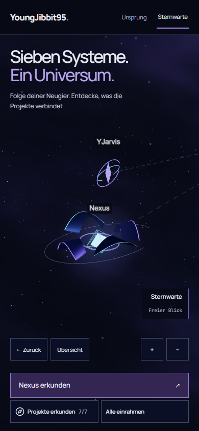
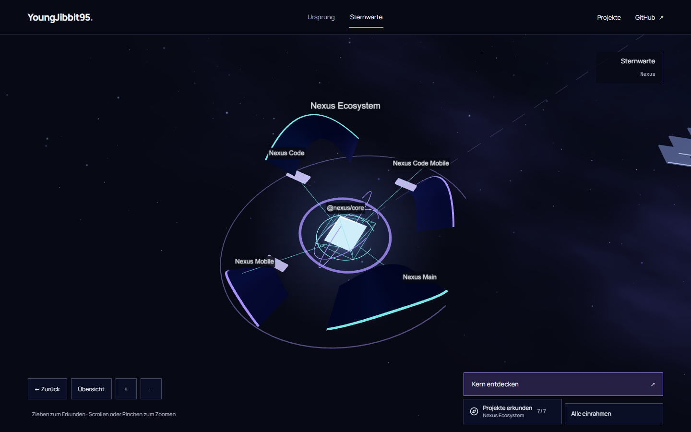
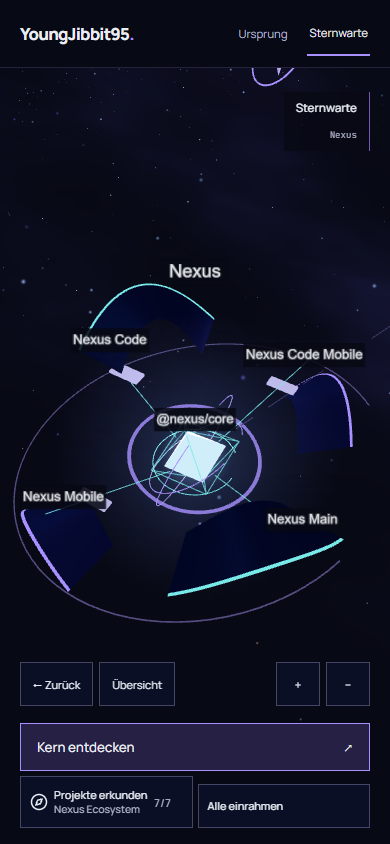
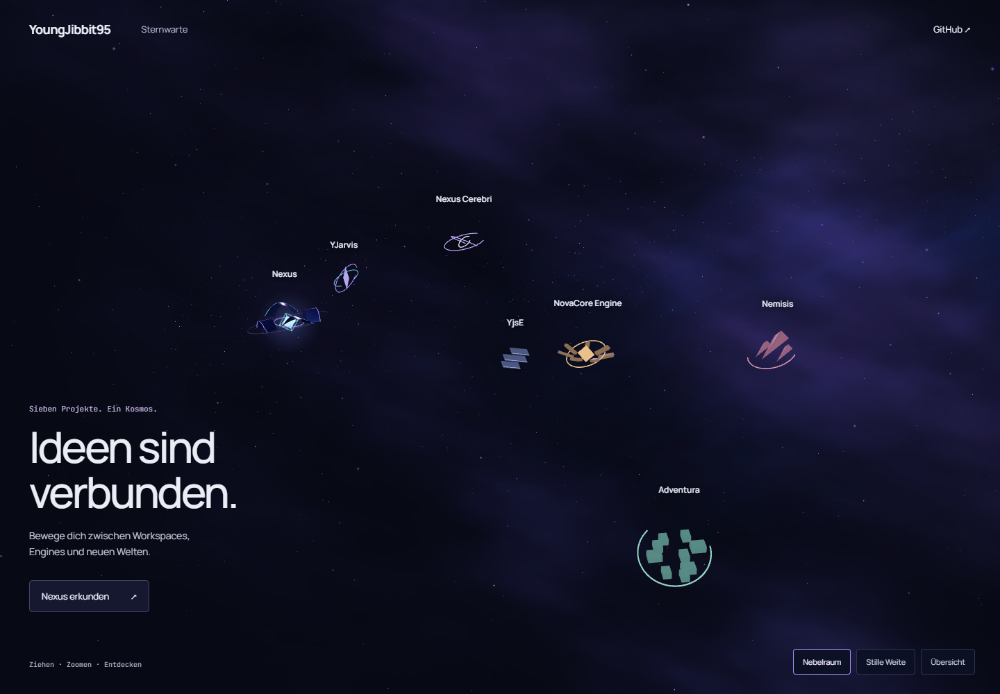
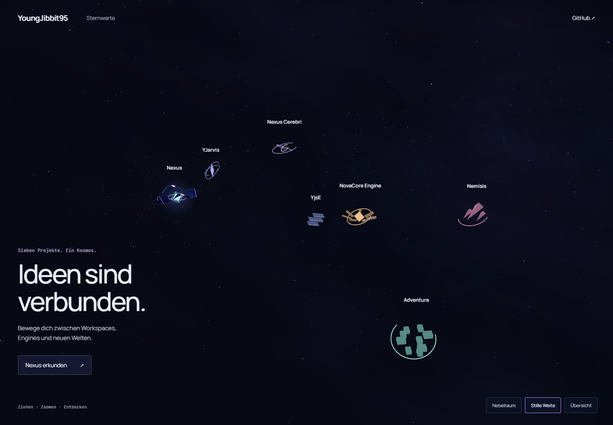

Vertical Slice · Visuelle Freigabe offen
Zurück in den Kosmos.
Die Sternwarte als frei erkundbarer blau-violetter Raum. Ein gemeinsamer Kern und vier orbitale Client-Segel machen Nexus bei der Annäherung lesbar. Diese Bilder stammen aus dem tatsächlichen Browser-Canvas.
Interaktiven Slice öffnen · Technischer Bericht und Grenzen · Art Direction und angewandte Skills
Übersicht und geführter mobiler Einstieg




Nexus: Die Annäherung öffnet das System




Zwei Interpretationen, ein kosmisches Thema
Die folgenden Aufnahmen zeigen das isolierte Art-Labor vor der abschließenden Integration. Nebelraum ist im Slice umgesetzt. Stille Weite bleibt die ruhigere Vergleichsstudie; Navigation und Dossier der Produktionsarchitektur werden dort nicht geprüft.


Hier endet dieser Auftrag
Technische Verifikation und gestalterische Freigabe sind getrennt. Der nächste Schritt nach deiner Bildfreigabe wäre die Übertragung dieser Sprache auf Origin und die übrigen sechs Detail-Systeme. G3, Merge und Produktionsdeploy bleiben gesperrt.